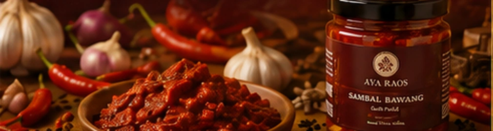
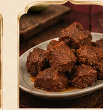
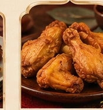

Sambal
Pedas dan gurih sebagai pendamping hidangan.
Lini untuk sambal, rempah, bumbu, pendamping, dan lauk berbumbu yang melengkapi hidangan sehari-hari.

AYA Spice Haven menghadirkan produk olahan berbumbu yang berfungsi sebagai pendamping, pelengkap, atau lauk. Fokusnya sederhana: membantu hidangan sehari-hari terasa lebih lengkap tanpa membuat pengalaman makan menjadi rumit.
Pedas dan gurih sebagai pendamping hidangan.

Produk yang melengkapi makanan sehari-hari.

Olahan rempah untuk memperkaya rasa.

Lauk siap disiapkan sesuai informasi produk.
Sambal Bawang menjadi wajah AYA Spice Haven karena paling langsung mewakili fungsi lini ini: pendamping yang sederhana, jelas, dan memberi karakter pada hidangan.